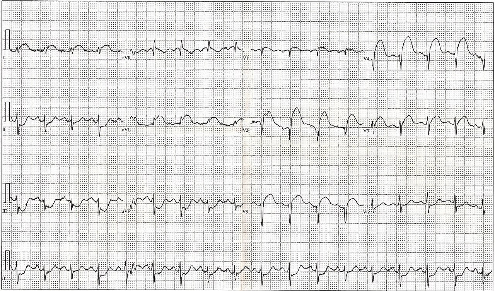
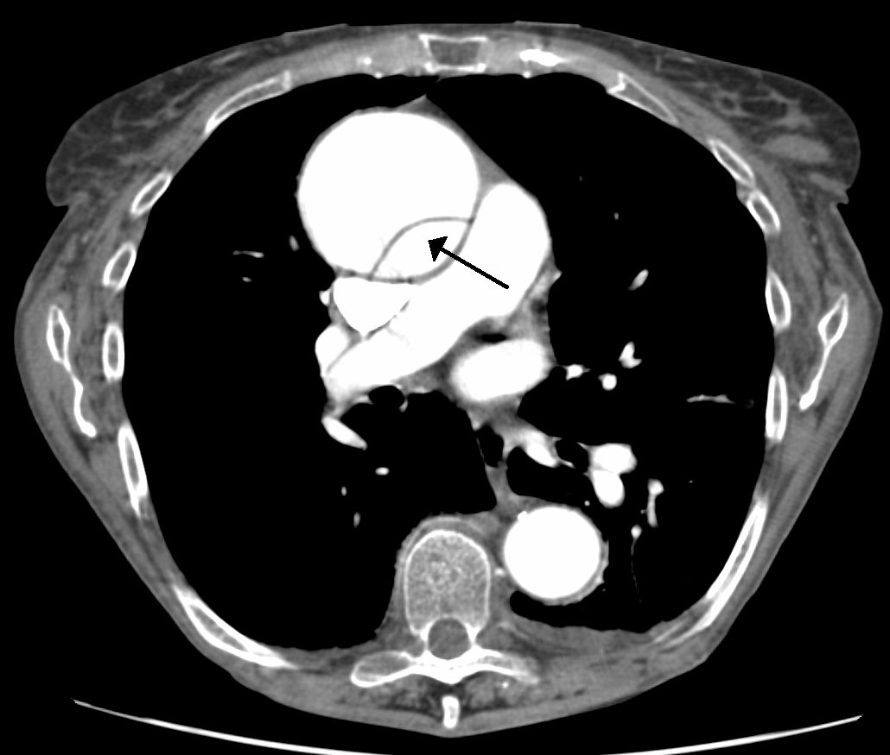

Douleur de la paroi thoracique
En médecine de famille suisse : affirmer la douleur pariétale, mais seulement après avoir écarté le cœur, l’aorte, l’artère pulmonaire et la plèvre
Les dix diagnostics différentiels, par fréquence décroissante
Au cabinet, la douleur de la paroi est la première cause de douleur thoracique, très loin devant le cœur[1]. Le premier geste reste pourtant l’électrocardiogramme (ECG), car aucune palpation rassurante ne dispense de chercher l’ischémie[2].
Le classement des diagnostics différentiels (DX) suit une seule série suisse : la cohorte romande TOPIC, qui a suivi 672 douleurs thoraciques de cabinet pendant 12 mois[1]. Un diagnostic sans aucun cas dans cette cohorte reçoit donc un rang ordinal, mais aucun pourcentage[1].
Les rangs E suivent l’immédiateté de la menace et l’ordre de l’arbre décisionnel. E1 correspond au pneumothorax sous tension, E2 à la maladie coronarienne, E3 à la dissection aortique et E4 à l’embolie pulmonaire. Le pneumothorax sous tension ouvre l’arbre, car il impose une décompression immédiate, avant tout bilan radiologique[3]. L’embolie et le syndrome coronarien conduisent à des antithrombotiques. On contrôle donc les signes de dissection avant toute aspirine : un patient amené de France voisine aux urgences de Genève, en réalité disséqué, en avait déjà reçu[4].
- DX.1 — Syndrome de la paroi thoracique : il touche 287 des 672 patients, soit 42,7 %[1]. Le syndrome de Tietze en est une variante, comme le traumatisme pariétal sans fracture ; une fracture de côte ou une métastase changent en revanche le diagnostic.
- DX.2 — Maladie coronarienne 🚩 E2 : elle explique 12,6 % des douleurs, ce qui en fait la première cause grave du cabinet[1].
- DX.3 — Douleur thoracique psychogène : elle concerne 77 patients, soit 11,5 %, si bien qu’elle précède toutes les causes respiratoires[1].
- DX.4 — Infection respiratoire aiguë : la bronchite aiguë touche 37 patients, soit 5,5 %, et la pleurésie ou la pneumonie 17 patients, soit 2,5 %[1].
- DX.5 — Œsophagite : elle touche 42 patients, soit 6,3 %, et elle vient après l’infection, puisque bronchite et pneumonie réunies la dépassent[1].
- DX.6 — Embolie pulmonaire 🚩 E4 : elle ne touche que 2 patients, soit 0,3 %, mais elle garde son rang de gravité[1].
- DX.7 — Zona thoracique : il touche aussi 2 patients sur 672 ; à fréquence égale, l’embolie, plus grave, passe devant lui[1].
- DX.8 — Dissection aortique 🚩 E3 : elle occupe le 8ᵉ rang, sans pourcentage, car la cohorte n’en a rencontré aucun cas[1].
- DX.9 — Pneumothorax 🚩 E1 sous tension : il occupe le 9ᵉ rang, sans pourcentage, pour la même raison[1].
- DX.10 — Péricardite aiguë : elle occupe le 10ᵉ rang, sans pourcentage ; dépourvue de rang E, elle suit les deux diagnostics graves restés sans cas[1].
Au-delà des causes fréquentes, chaque place revient à une menace E ou à une cause dotée d’un signe et d’un traitement propres, comme le zona ou la péricardite. L’arythmie dépistée par l’ECG, l’asthme ou la bronchopneumopathie chronique obstructive (BPCO) et la douleur projetée du dos, de 1 à 1,5 %, restent donc hors liste[1]. Les métastases costales relèvent, quant à elles, du drapeau rouge de la paroi[5].
La cohorte hessoise de 1212 patients confirme ce classement, puisque le syndrome de paroi y pèse 46,6 %, la maladie coronarienne 14,8 % et les causes psychogènes 9,5 %[6]. L’absence de cas ne signifie pas l’absence de danger, car ces affections sont simplement rares au cabinet[1].
| Diagnostic | Signe clé | Examen clé | Mécanisme | Conduite | Rang |
|---|---|---|---|---|---|
| DX.1 Paroi | Douleur localisée, reproduite à la palpation. | Palpation, après ECG et Marburg. | Une insertion se sensibilise. | Réassurance, antalgique simple ; revoir si la douleur change. | — |
| DX.2 Coronaire | Oppression d’effort irradiant au bras ou à la mâchoire. | ECG en 10 min, puis troponine. | Le myocarde manque d’oxygène. | infarctus avec sus-décalage du segment ST (STEMI) : contrôle de dissection, aspirine, 144. | E2 |
| DX.3 Psychogène | Peur, hyperventilation, paresthésies. | Anamnèse ; ECG normal. | L’hyperventilation l’entretient. | Nommer l’anxiété, suivre. | — |
| DX.4 Infection | Toux et fièvre ; douleur pleurale. | Auscultation, au besoin radiographie. | La plèvre ou la bronche s’enflamme. | Traiter la cause, revoir. | — |
| DX.5 Œsophagite | Brûlure après le repas, en position couchée. | Essai d’inhibiteur de la pompe à protons (IPP) ; endoscopie si alarme. | L’acide irrite la muqueuse. | Exclure d’abord le cœur. | — |
| DX.6 Embolie | Douleur pleurale, dyspnée, tachycardie. | Score, puis D‑dimères ou angio‑CT. | Un thrombus obstrue l’artère. | Forte probabilité ou D‑dimères positifs : angio‑CT ; instable : 144. | E4 |
| DX.7 Zona | Bande unilatérale sur un dermatome. | Inspection de la peau. | Le virus latent se réactive. | Antiviral sous 72 h ; pas de brivudine sous fluoropyrimidine. | — |
| DX.8 Dissection | Douleur déchirante, pouls ou pression asymétriques. | Angioscanner. | L’intima se rompt. | 144, sans antithrombotique. | E3 |
| DX.9 Pneumothorax | Dyspnée brutale, murmure absent d’un côté. | Clinique sous tension ; sinon radiographie. | L’air collabe le poumon. | Sous tension : décompression et 144 ; stable : taille et symptômes. | E1 |
| DX.10 Péricardite | Douleur positionnelle, frottement. | 2 critères : frottement, ECG, épanchement. | Le péricarde s’enflamme. | anti-inflammatoire non stéroïdien (AINS) et colchicine selon le protocole local. | — |
1. Définition et sémantique
La définition de la Revue médicale suisse, 2007
On nomme douleur pariétale toute douleur de la paroi du thorax que la palpation reproduit ; ce critère de reproduction, et non la localisation seule, fonde le diagnostic[5]. Le , ou chest wall syndrome, en représente la forme principale, car son origine reste indéterminée alors que la paroi est manifestement en cause[5].
La douleur thoracique elle-même désigne une sensation désagréable et anormale du thorax antérieur ; elle peut être aiguë ou chronique, focale ou diffuse, et irradier ou non[5]. Le motif de consultation ouvre donc une enquête, puisque plus de 80 causes différentes ont été décrites derrière cette même plainte[5].
Les termes à abandonner, et pourquoi
Le vocabulaire ancien multipliait les étiquettes, comme « rhumatisme intercostal », ostéochondrite ou costochondrite, sans démontrer de lésion propre[5]. On leur préfère donc le terme global de « douleur pariétale », qui décrit ce que l’on constate[5]. De même, « douleur thoracique atypique » ne nomme rien : elle décrit ce que la douleur n’est pas, alors que le diagnostic de paroi exige un argument positif[7].
Le n’est pas un synonyme, car il suppose une inflammation visible des jonctions chondrocostales[5]. La cohorte romande n’en a d’ailleurs trouvé aucun vrai cas parmi ses syndromes de paroi, ce qui confirme que l’inflammation reste l’exception[8].
Ce qui s’en approche sans en être
Le nom change dès qu’une cause précise explique la douleur de paroi : spondylarthrite ankylosante, syndrome SAPHO, fibromyalgie, cicatrice de thoracotomie, irritation radiculaire, fracture ou métastase osseuse[5]. Parmi elles, la métastase n’est pas une urgence vitale, mais elle doit être évoquée puis exclue, car elle change le pronostic[5].
Inversement, une sensibilité à la palpation ne prouve rien à elle seule, puisqu’un point douloureux se retrouve aussi dans d’autres affections thoraciques[8]. Le syndrome de paroi coexistait en effet avec une coronaropathie chez 19 patients de la cohorte et avec une néoplasie chez 6 d’entre eux[8].
Le score de Marburg traduit cette frontière dans ses critères, car une douleur « non reproductible à la palpation » y compte comme argument coronarien[9]. La palpation devient ainsi un geste de décision à part entière[9].
Syndrome de la paroi thoracique
Ce syndrome désigne une douleur bénigne de la paroi antérieure, d’origine musculosquelettique, et il constitue la cause la plus fréquente de douleur thoracique en premier recours[7]. Son incidence varie selon les études de 20,4 à 46,6 % des douleurs thoraciques de cabinet, car les définitions diffèrent d’une série à l’autre[7].
Sa douleur est le plus souvent modérée, bien localisée, continue ou intermittente pendant des heures ou des semaines, et la position ou le mouvement l’amplifient[8]. Elle siège surtout sur la ligne médiane ou à gauche, si bien qu’elle inquiète précisément parce qu’elle occupe le territoire du cœur[8].
L’erreur fréquente consiste à poser ce diagnostic par élimination ; or il se construit sur la palpation, l’histoire mécanique et l’absence d’argument coronarien, puis il se confirme par l’évolution[7].
Syndrome de Tietze
Le syndrome de Tietze associe la douleur à des signes inflammatoires des jonctions chondrocostales, c’est-à-dire une tuméfaction que l’on voit et que l’on palpe[5]. Il se distingue ainsi du syndrome de paroi, dont la palpation réveille la douleur sans révéler de gonflement[5].
La cohorte romande n’en a observé aucun vrai cas, de sorte que ce nom ne devrait plus servir d’étiquette pour toute douleur sternale[8]. À l’examen fédéral, le piège classique consiste à appeler « Tietze » une douleur chondrocostale sans tuméfaction : la bonne réponse reste alors « syndrome de la paroi thoracique »[8].
2. Épidémiologie (Suisse, puis Europe)
Les chiffres suisses viennent surtout des cabinets romands de la cohorte TOPIC, si bien qu’ils décrivent exactement la population du cabinet de médecine de famille[1]. Ces chiffres se lisent par population, car un même pourcentage change de sens entre le cabinet et les urgences[5].
| Chiffre | Population | Année | Source |
|---|---|---|---|
| La douleur thoracique motive de 0,7 à 2,7 % des consultations[10]. | Médecine de famille | 2014 | Revue médicale suisse |
| La cohorte réunit 672 cas, soit 2,7 % des consultations, avec 52,4 % de femmes et un âge moyen de 55 ans[1]. | Cabinets romands, TOPIC | 2008 | Swiss Medical Weekly |
| Le syndrome de paroi représente 1,2 % de toutes les consultations[8]. | Cabinets romands | 2007 | BMC Family Practice |
| Une affection potentiellement dangereuse touche 134 patients, soit 20 % des cas[1]. | Cabinets romands, TOPIC | 2008 | Swiss Medical Weekly |
| L’origine cardiovasculaire concerne de 12 à 16 % des douleurs au cabinet, mais peut atteindre 80 % aux urgences[5]. | Ambulatoire et urgences | 2007 | Revue médicale suisse |
| Le zona survient chez 1,3 à 3,4 personnes pour 1000 par an, ce qui donne 13 000 cas par an en Suisse[11]. | Population générale suisse | 2007 | Revue médicale suisse |
| La péricardite récidive dans 20 à 50 % des cas selon les séries[12]. | Séries européennes et nord-américaines | 2022 | Revue médicale suisse |
| Le syndrome de paroi varie de 24,5 à 49,8 % et l’ischémie myocardique de 9,7 à 14,8 % des douleurs[13]. | Premier recours européen, méta-analyse | 2015 | Croatian Medical Journal |
Âge, sexe et groupes à risque
Le syndrome de paroi touche tous les âges, des adolescents aux personnes de plus de 75 ans, et sa moyenne d’âge atteint 50,3 ans[8]. Il frappe autant les femmes que les hommes, avec un rapport de 1:1, ce qui interdit de l’attribuer à un profil type[8].
Le terrain modifie pourtant la probabilité coronarienne, car le score de Marburg retient l’âge de 65 ans chez la femme et de 55 ans chez l’homme comme seuil de risque[9]. De même, le pneumothorax spontané idiopathique frappe surtout le sujet jeune, alors que la forme secondaire survient vers 60 ans sur une pneumopathie[14].
La comorbidité est la règle plutôt que l’exception : 83 % des patients atteints de syndrome de paroi en portaient au moins une, dont une comorbidité psychiatrique chez 50 % d’entre eux[8].
Histoire naturelle
Le syndrome de paroi guérit en général, mais il récidive volontiers, puisque 171 patients, soit 57 %, en ont souffert plus d’une fois au cours de l’année[8]. Le diagnostic initial a pourtant été abandonné chez 16 patients, chez qui l’on a découvert une œsophagite, une anxiété, une coronaropathie, un cancer pulmonaire ou une métastase pariétale[8].
Le pronostic global reste lié aux causes graves, et non à la paroi[1]. Au cours du suivi de TOPIC, 7 décès par cancer et 5 décès de cause cardiaque étaient directement liés à la douleur thoracique[1].
Enjeux de santé publique
La douleur thoracique coûte surtout par ses examens : lors de la seule première consultation de TOPIC, on a demandé 144 ECG, 82 radiographies du thorax et 49 bilans de laboratoire[1]. Ensuite, 79 patients ont été adressés au cardiologue, ce qui montre le poids de la crainte coronarienne dans la décision[1].
Explorer davantage ne protège pas forcément : chez 926 633 patients à bas risque, les investigations supplémentaires ont accru les revascularisations sans réduire les infarctus à un an[15]. La pratique suisse vise donc une exclusion ciblée des urgences, et non une exploration systématique de toute douleur de paroi[15].
3. Physiopathologie
La douleur pariétale est mécanique : elle varie avec la mobilisation du thorax ou de l’épaule, et la palpation la reproduit[5]. Toute la démarche repose sur cette propriété, car chaque mécanisme de la liste se relie à un geste, à un examen et à un traitement qui lui sont propres[5].
La chaîne pariétale : de l’insertion à la plainte
D’abord, l’amorce se situe dans les zones d’insertion des muscles et des tendons sur l’os, ou dans les zones mobiles comme les jonctions chondrocostales[8]. Ensuite, une contrainte répétée entretient la douleur : une toux prolongée, une thoracotomie ou un travail respiratoire excessif lors d’un asthme suffisent à la déclencher[8].
Le maintien de la douleur tient souvent à l’anxiété, car celle-ci augmente la sensibilité d’un point que le patient croit lié à une maladie menaçante[8]. Dès lors, la plainte s’installe dans un cercle : la peur amplifie la douleur, et la douleur entretient la peur du cœur[8].
L’inflammation vraie reste l’exception, si bien qu’un anti-inflammatoire n’y corrige pas une lésion mais calme seulement la douleur mécanique[8]. C’est pourquoi la réassurance et une antalgie simple suffisent en général, à condition de rester prêt à revoir le diagnostic[5].
La chaîne ischémique
L’ischémie myocardique produit une douleur rétrosternale ou en barre, oppressante, qui irradie vers les bras ou les mâchoires et que l’effort déclenche ou aggrave[5]. Elle peut toutefois survenir la nuit, sans effort, de façon atypique ou même silencieuse, ce qui interdit de l’exclure sur la seule description[5].
Comme aucun signe d’examen n’est pathognomonique, la perturbation se démontre sur le tracé et dans le sang : l’ECG montre le sus-décalage, la troponine prouve la nécrose[5].
La chaîne pleurale et vasculaire pulmonaire
Dans l’embolie pulmonaire, la douleur vient avant tout de l’irritation pleurale en aval du thrombus[5]. Or une embolie peu douloureuse est souvent centrale, donc plus grave, si bien qu’une douleur faible ne rassure jamais[5].
La défaillance du ventricule droit tue dans l’embolie, mais ses signes cliniques, comme la turgescence jugulaire, apparaissent tardivement ; c’est pourquoi la probabilité clinique et les D-dimères doivent intervenir avant eux[5].
La chaîne aortique
L’événement déclenchant semble être une déchirure de l’intima, mais une média déjà dégénérée paraît nécessaire pour que le sang la clive[4]. L’hypertension chronique prépare ce terrain, puisqu’elle reste le seul facteur de risque couramment identifié[4].
Le faux chenal peut ensuite écraser l’origine des troncs supra-aortiques ; il en résulte une perte de pouls, une asymétrie tensionnelle ou un déficit neurologique focal[4].
La chaîne œsophagienne
Le reflux acide n’explique pas tout : la douleur thoracique touche 37,6 % des « reflueurs », mais aussi 12 % des patients sans reflux[5]. La dysmotilité, comme l’œsophage en casse-noisette, et l’hypersensibilité viscérale complètent donc le mécanisme, ce qui explique les échecs d’un traitement purement antiacide[5].
La chaîne neurologique du zona
Après la varicelle, le virus reste latent toute la vie dans les ganglions sensitifs rachidiens et crâniens[11]. Lorsque l’immunité contre le virus baisse, il se réactive, et la nécrose hémorragique du ganglion atteint peut léser durablement les voies sensitives[11].
La chaîne anxieuse
L’anxiété agit par trois voies : elle provoque une hyperventilation, elle contracte excessivement les muscles respiratoires et elle libère des catécholamines en quantité importante[5]. Ces patients guettent aussi davantage leurs sensations corporelles, qu’ils rattachent volontiers à une maladie inconnue, donc angoissante[5].
| Perturbation | Exploration qui la montre | Thérapeutique qui la corrige |
|---|---|---|
| Une insertion musculaire ou une jonction chondrocostale se sensibilise sous contrainte. | La palpation reproduit la douleur spontanée au même endroit. | La réassurance coupe le cercle de la peur, et l’antalgique calme la douleur mécanique. |
| Une plaque coronaire se rompt ou une sténose prive le myocarde d’oxygène. | L’ECG montre le sus-décalage ou le sous-décalage, et la troponine prouve la nécrose. | La reperfusion en urgence de l’infarctus avec sus-décalage du segment ST (STEMI) rétablit le flux coronaire. |
| Un thrombus obstrue une artère pulmonaire et irrite la plèvre. | Les D-dimères orientent, puis l’angio-CT montre le défect. | L’anticoagulation arrête l’extension du thrombus ; elle se décide à l’hôpital. |
| L’intima se rompt et le sang clive la média. | L’angioscanner montre le voile intimal et le faux chenal. | Les bêtabloquants abaissent la contrainte pariétale, puis le chirurgien décide de l’intervention. |
| Le reflux, la dysmotilité ou l’hypersensibilité irritent l’œsophage. | L’essai d’inhibiteur de la pompe à protons répond, ou l’endoscopie montre l’œsophagite. | L’inhibiteur de la pompe à protons réduit l’acidité et calme la muqueuse. |
| Le virus réactivé enflamme le ganglion sensitif et la peau du dermatome. | L’examen cutané montre les vésicules sur un seul dermatome. | L’antiviral précoce limite l’éruption et la douleur aiguë. |
| L’air pénètre dans la plèvre et collabe le poumon. | La percussion et l’auscultation montrent l’asymétrie ; sous tension, la clinique suffit. | L’exsufflation immédiate lève la tension ; ailleurs, l’observation ou le drainage dépendent des symptômes. |
| Le péricarde s’enflamme et frotte à chaque battement. | Le frottement s’entend, puis l’ECG montre un sus-décalage diffus. | L’anti-inflammatoire et la colchicine suivent le protocole local. |
| L’hyperventilation et les catécholamines entretiennent une douleur anxieuse. | L’anamnèse trouve le facteur déclenchant et les symptômes associés. | L’explication, le suivi et la prise en charge de l’anxiété réduisent les récidives. |
4. Démarche diagnostique
Le cabinet et les urgences ne poursuivent pas le même but : l’urgentiste doit d’abord exclure la gravité, alors qu’en premier recours il faut ensuite construire un diagnostic et suivre le patient[5]. La démarche concilie donc ces buts : on exclut d’abord les menaces E1 à E4, dans l’ordre de leur immédiateté, puis l’on nomme la cause fréquente sur des arguments propres[5].
Premier temps : les menaces, de la plus immédiate à la plus lente
La porte d’entrée est l’instabilité vitale : un patient instable part sans délai vers l’hôpital par cardiomobile, sous oxygène, monitorage et voie veineuse[3]. E1, le pneumothorax sous tension, se reconnaît à la clinique : il impose la décompression immédiate, sans attendre le bilan radiologique[3]. Il s’agit d’une instabilité hémodynamique, qui justifie aussi un drain thoracique[16].
E2, la maladie coronarienne, suit aussitôt, car tout patient qui souffre du thorax doit bénéficier d’un ECG à 12 dérivations dès que possible[2]. Lorsque le cœur reste suspect sans autre diagnostic plausible, on traite le patient comme un syndrome coronarien avéré[2]. Avant l’aspirine, on cherche toutefois les signes de dissection, car celle-ci peut imiter un syndrome coronarien jusqu’à la thrombolyse[4].
E3, la dissection aortique, vient ensuite, car sa mortalité croît très vite dès les premières heures[17]. Aux urgences, on ne l’évoque pourtant qu’à peine dans la moitié des cas, si bien qu’une douleur brutale, déchirante ou migrante doit y faire penser d’emblée[4].
L’embolie et le syndrome coronarien conduisent à des antithrombotiques ; c’est pourquoi on contrôle les signes de dissection avant toute aspirine, car un patient disséqué traité comme coronarien en avait déjà reçu[4]. E4, l’embolie pulmonaire, se cache derrière une douleur pleurale banale ; la probabilité clinique, mesurée par un score, décide alors du recours aux D-dimères[18].
Second temps : affirmer la cause fréquente
Une fois les menaces écartées, le syndrome de paroi se construit sur des critères positifs, que résume la [7]. La douleur psychogène se construit, elle aussi, positivement, car elle n’est pas un diagnostic d’exclusion : l’écoute de l’anamnèse et des non-dits y apporte l’argument décisif[5].
La douleur œsophagienne se discute après le cœur, car le spasme imite l’angor ; on n’y conclut qu’après avoir exclu l’ischémie, sauf si le tableau est parfaitement typique[5]. Le zona, quant à lui, se démasque par l’éruption, si bien qu’une douleur en bande sans cause visible impose de réexaminer la peau dans les jours suivants[19].
| DX | Élément qui tranche | Piège | Conduite si positif |
|---|---|---|---|
| DX.9 Pneumothorax sous tension, E1 | Le murmure vésiculaire manque d’un côté, la trachée dévie et les jugulaires se gonflent. | Attendre la radiographie fait perdre le temps qui sauve. | On décomprime sans attendre l’image et l’on appelle le 144. |
| DX.2 Maladie coronarienne, E2 | L’ECG remplit les critères de sus-décalage du segment ST dans 2 dérivations contiguës. | Un ECG normal n’exclut pas un angor instable ; la troponine et l’évolution restent nécessaires. | On déclenche l’alarme STEMI par le 144 et l’on transfère vers la salle de cathétérisme. |
| DX.8 Dissection aortique, E3 | La douleur brutale et déchirante s’associe à un déficit de pouls ou à un médiastin élargi. | La radiographie peut rester normale, et les D-dimères ne l’excluent pas ; un STEMI peut la révéler par atteinte de la coronaire droite. | On appelle le 144 pour un angioscanner, sans aucun antithrombotique. |
| DX.6 Embolie pulmonaire, E4 | Le score de Genève ou de Wells, puis les D-dimères, tranchent selon la probabilité. | Une douleur faible rassure à tort, car les embolies centrales font souvent moins mal. | On adresse le patient pour un angio-CT lorsque les D-dimères dépassent le seuil. |
5. Anamnèse ciblée et drapeaux rouges
Bien conduite, l’anamnèse oriente le plus souvent vers la bonne hypothèse ; elle mérite donc le temps et l’attention qu’on lui donne, avant tout examen complémentaire[5]. Chaque question porte sa raison, car elle sert un DX précis ou un critère de score[5].
Chronologie et caractère de la douleur
On demande d’abord depuis quand la douleur dure et comment elle a commencé, car l’alarme STEMI exige une douleur typique prolongée de plus de 20 minutes et persistante[2]. On fait ensuite décrire la douleur : une oppression rétrosternale ou en barre, irradiant vers les bras, surtout à gauche, ou vers les mâchoires, oriente vers les coronaires[5].
On cherche le déclencheur, car une douleur aggravée par l’effort compte comme critère coronarien, alors qu’une douleur liée au mouvement ou à la position oriente vers la paroi[9]. On demande aussi ce que le patient pense de sa douleur : s’il la croit cardiaque, le score de Marburg lui accorde 1 point, car cette conviction a une valeur prédictive propre[9].
Une douleur pleurale, majorée par l’inspiration, oriente vers la plèvre, l’embolie ou la péricardite ; une douleur qui varie avec la position et la respiration évoque plus précisément le péricarde[12].
Comorbidités et terrain
Les antécédents cardiovasculaires et les facteurs de risque pèsent lourd dans la probabilité coronarienne, si bien qu’il faut toujours les rechercher[5]. Une maladie vasculaire connue, qu’elle soit coronaire, cérébrale ou périphérique, ajoute d’ailleurs 1 point au score de Marburg[9].
On cherche ensuite les facteurs de thrombose, car les scores de probabilité d’embolie comptent un antécédent de thrombose ou d’embolie, une chirurgie ou une fracture récente, un cancer et une hémoptysie[18]. La règle Pulmonary Embolism Rule-out Criteria (PERC) interroge aussi la prise d’hormones, qui suffit à la rendre inapplicable[18].
L’hypertension est le seul terrain couramment retrouvé dans la dissection, où elle concerne la grande majorité des patients[4]. Avant 40 ans, on recherche la cocaïne et un syndrome de Marfan[4]. Le tabagisme, enfin, multiplie le risque de pneumothorax idiopathique par environ 22 chez l’homme fumeur, ce qui justifie la question chez tout jeune dyspnéique[14].
Médicaments à connaître avant de prescrire
On demande si le patient a pris récemment un inhibiteur de la phosphodiestérase de type 5, car les dérivés nitrés sont alors contre-indiqués[2]. On demande aussi s’il reçoit ou recevra une fluoropyrimidine, car l’association avec la brivudine peut être fatale[20].
Ce que le patient ne dit pas
L’anxiété peut être la seule cause d’une douleur thoracique ; elle peut aussi accompagner une autre cause, si bien que la reconnaître n’exclut jamais l’organique[5]. L’attaque de panique s’accompagne très souvent de douleur thoracique, dans 22 à 70 % des cas, au point que ce symptôme figure parmi ses critères diagnostiques[5].
Les se recherchent en premier, car ils décident à eux seuls de l’urgence ; c’est pourquoi ils ouvrent l’examen, avant même la palpation de la paroi[5].
| Drapeau rouge 🚩 | Signification | Action immédiate |
|---|---|---|
| La dyspnée brutale s’accompagne d’un murmure absent d’un côté, d’une trachée déviée ou de jugulaires turgescentes. | Elle évoque un pneumothorax sous tension, E1 (DX.9). | On décomprime sans attendre la radiographie et l’on appelle le 144. |
| La douleur est rétrosternale, oppressante, prolongée, avec sueurs ou malaise. | Elle évoque un syndrome coronarien aigu, E2 (DX.2). | On enregistre l’ECG tout de suite et l’on appelle le 144 si les critères de STEMI sont présents. |
| La douleur est brutale, déchirante, dorsale, avec syncope ou pouls asymétriques. | Elle évoque une dissection aortique, E3 (DX.8). | On appelle le 144, sans test d’effort ni antithrombotique. |
| Une dyspnée, une hémoptysie ou une jambe tuméfiée accompagne la douleur pleurale. | Elle évoque une embolie pulmonaire, E4 (DX.6). | On calcule le score de probabilité et l’on adresse aux urgences si la probabilité est forte. |
| La douleur brutale s’accompagne d’une dyspnée modérée, chez un patient stable. | Elle évoque un pneumothorax simple (DX.9). | On adresse le jour même ; la taille et les symptômes guident ensuite l’observation ou le drainage. |
| Une dysphagie, une odynophagie, une perte de poids, une anorexie ou un méléna apparaissent. | Ils signalent une pathologie digestive organique. | On demande une endoscopie au lieu de prolonger l’essai d’inhibiteur de la pompe à protons. |
| La douleur de paroi survient chez un patient avec cancer connu, ou elle s’aggrave la nuit. | Elle peut révéler une métastase costale. | On demande une imagerie osseuse, car la métastase change le pronostic. |
| Une fièvre au-delà de 38 °C, un début subaigu ou un épanchement abondant accompagnent une péricardite. | Ce sont des prédicteurs majeurs de mauvais pronostic. | On hospitalise pour un bilan étiologique. |
Signes de menace vitale
La clinique repère la menace vitale avant tout examen : troubles du rythme, troubles tensionnels avec asymétrie, souffle cardiaque, frottement péricardique, cyanose, pâleur, sudation et altération de la conscience[5].
La même liste retient la tachypnée au-delà de 20/min comme signe de menace vitale[5]. Une fréquence respiratoire élevée impose donc une évaluation immédiate, puis le choix de la filière selon la cause trouvée.
L’erreur classique consiste à chercher un signe pathognomonique du cœur ; or il n’en existe aucun, si bien que la combinaison de l’anamnèse, du statut et de l’ECG décide[5].
6. Examen physique ciblé, région par région
L’examen suit l’ordre des menaces : il commence par l’aspect général et les constantes, puis il descend du cœur à la plèvre, et il finit seulement par la paroi[5]. Cet ordre protège du piège principal, car une paroi douloureuse peut coexister avec une cause grave[5].
Aspect général et constantes
Le normal se reconnaît vite : patient coloré, conscient, eupnéique, pouls régulier et pression symétrique aux deux bras. Le pathologique se lit sur la même liste en négatif, puisque pâleur, sueurs, cyanose, troubles du rythme ou de la conscience signent une menace vitale[5].
La fréquence cardiaque compte double dans l’embolie, car le score de Genève révisé simplifié ajoute 1 point de 75 à 94/min et 2 points à partir de 95/min[18]. La saturation se mesure aussi, puisque la règle PERC exige une saturation pulsée en oxygène (SpO2) supérieure à 94 % pour rester applicable[18].
Cœur et gros vaisseaux
On prend la pression aux deux bras et l’on palpe les pouls[17]. Une asymétrie des pouls ou une différence tensionnelle de plus de 20 mmHg entre les membres supérieurs compte en effet parmi les signes cardinaux de la dissection[17]. Des pouls symétriques ne l’excluent pourtant pas, puisque aucun élément clinique ne suffit à écarter ce diagnostic[4]. L’auscultation cherche ensuite un souffle ou un frottement péricardique, signes qui font partie des menaces à ne pas manquer[5].
Le piège consiste à attendre un signe cardiaque spécifique, alors qu’aucun signe d’examen n’est pathognomonique de la maladie coronarienne ; un examen normal n’exclut donc jamais E2[5].
Poumons et plèvre
On percute et l’on ausculte de façon comparative, car une percussion et une auscultation asymétriques orientent vers le pneumothorax[5]. Des râles, une toux et une fièvre orientent vers l’infection, tandis que la dyspnée, le tirage et la cyanose mesurent la gravité respiratoire[5].
Paroi thoracique
La palpation se fait doucement, du bout du doigt, sur le sternum, les jonctions chondrocostales et les espaces intercostaux[8]. On demande alors si la douleur provoquée est bien celle qui amène le patient[8]. Un point sensible n’a de valeur que s’il correspond au siège de la douleur spontanée, qui reste le plus souvent unilatérale[8].
La valeur du geste est réelle mais limitée, car la palpation n’a reproduit la douleur que chez 71 % des patients atteints de syndrome de paroi[7]. Une palpation négative ne permet donc pas de l’exclure[7].
Peau et dermatome
On déshabille le patient et l’on regarde la peau du dos et du thorax, car le zona siège surtout sur un dermatome thoracique ou lombaire, de T3 à L2[11]. Avant l’éruption, la peau peut rester normale, alors que la douleur ou les dysesthésies du dermatome sont déjà là ; il faut donc revoir la peau si la douleur persiste[11].
- Cliché
- La photographie clinique en couleur montre la paroi thoracique antérieure et latérale.
- Incidence
- La vue est oblique, bras surélevé ; l’aisselle se trouve à gauche de l’image et le mamelon en bas.
- Inscriptions
- La photographie ne porte aucune inscription ni aucun identifiant ; le visage n’apparaît pas.
Lecture guidée : le premier repère montre la peau saine, sans papule ni érythème, qui sert de référence. Le deuxième montre des vésicules à liquide clair, groupées en bouquets sur une base érythémateuse[19]. Le troisième montre leur confluence en placard, et le quatrième l’arrêt de la bande, car les lésions suivent les dermatomes d’un même ganglion rachidien[19].
Pièges : avant l’éruption, la peau reste normale alors que la douleur du dermatome est déjà présente ; la photographie ne permet donc pas d’exclure un zona débutant[11].
Ce que l’image décide : une telle éruption confirme le zona et fait commencer l’antiviral sans attendre[19]. Il est en effet surtout utile durant les 72 heures qui suivent le début de l’éruption[19].
Membres inférieurs
On examine enfin les mollets, car un œdème unilatéral avec douleur à la palpation des veines profondes constitue un signe de thrombose qui compte dans les scores d’embolie[18].
7. Approche syndromique
Le syndrome regroupe des signes fonctionnels, que le patient rapporte, et des signes physiques, que l’examen trouve ; il oriente donc vers un groupe de DX avant même le premier examen complémentaire[5]. Les syndromes suivent ici l’ordre de gravité, car la conduite dépend d’abord du risque vital[7].
7.1 Syndrome ischémique myocardique
Le signe fonctionnel cardinal est une douleur rétrosternale ou en barre, oppressante, qui irradie vers les bras, surtout à gauche, ou vers les mâchoires[5]. Elle peut naître à l’effort, mais elle peut aussi survenir la nuit, au repos, ou rester atypique et même silencieuse ; l’absence de lien avec l’effort ne rassure donc pas[5].
Les signes physiques sont pauvres, puisqu’aucun n’est pathognomonique ; sueurs, pâleur et troubles du rythme comptent toutefois parmi les signes de menace vitale[5]. Le geste qui tranche reste l’ECG à 12 dérivations, enregistré dès que possible chez tout patient qui se plaint de la poitrine[2].
7.2 Syndrome aortique aigu
La douleur est brutale, sévère, déchirante ou migrante ; elle peut se cacher derrière n’importe quelle douleur thoracique ou dorsale, ce qui en fait le piège le plus coûteux[4]. Le mécanisme explique cette brutalité, car la déchirure de l’intima permet au sang de cliver une média déjà dégénérée[4].
Le signe physique classique est une , recherchée aux deux bras ; la dissection se présente même dans environ 10 % des cas par une syncope[4].
Asymétrie des pouls et de la pression artérielle
On prend la pression aux deux bras, puis l’on compare les pouls radiaux, carotidiens et fémoraux, car le faux chenal peut obstruer l’origine des troncs supra-aortiques[4]. Ce signe reste inconstant, si bien que son absence n’autorise jamais à exclure une dissection[4].
Un pouls symétrique chez un patient à la douleur déchirante n’autorise donc ni le retour à domicile ni le test d’effort ; seule l’imagerie aortique tranche[17].
7.3 Syndrome pleural
La douleur pleurale augmente à l’inspiration et à la toux ; elle traduit l’irritation de la plèvre, que la cause soit embolique, infectieuse ou mécanique[5]. Dans l’embolie, son intensité ne mesure donc pas la gravité, car une embolie centrale peut rester peu douloureuse[5].
Lorsque la cause est infectieuse, la toux, la fièvre et les signes auscultatoires dessinent le syndrome[5]. Chez le sujet âgé, une baisse de l’état général peut toutefois rester le seul symptôme d’appel[5]. Dans le pneumothorax, enfin, la douleur commence brutalement avec une dyspnée, puis la percussion et l’auscultation deviennent asymétriques[5].
7.4 Syndrome péricardique
La douleur varie avec la respiration et la position ; elle s’accompagne d’un , qui constitue à lui seul l’un des critères diagnostiques de la péricardite[12].
Frottement péricardique
Le frottement traduit l’inflammation des feuillets du péricarde ; on le recherche à chaque auscultation, car sa présence suffit à compter un critère diagnostique[12].
Le frottement compte comme l’un des critères ; associé à une douleur positionnelle, il atteint les 2 critères requis pour la péricardite aiguë, sans attendre l’échocardiographie[12]. Il figure aussi dans la liste des signes de menace vitale, ce qui impose de rechercher un épanchement associé[5].
7.5 Syndrome pariétal et radiculaire
La douleur pariétale est modérée, bien localisée, durable et majorée par la position ou le mouvement ; elle siège le plus souvent sur la ligne médiane ou à gauche[8]. Le signe physique qui la définit est la reproduction de la douleur à la palpation, puisque c’est sur ce critère que repose aujourd’hui la notion de douleur pariétale[5].
Une douleur radiculaire, cervicale ou thoracique, peut cependant irradier vers la cage thoracique et imiter la paroi ; le zona en est l’exemple, puisque la douleur du dermatome précède souvent l’éruption[5].
7.6 Syndrome œsophagien
La douleur œsophagienne prend souvent la forme d’une brûlure liée aux repas, aggravée en position couchée, avec une anamnèse de reflux[5]. Le spasme œsophagien donne cependant une constriction rétrosternale qui imite l’angor, de sorte qu’on exclut toujours la cause cardiovasculaire avant de conclure à l’œsophage[5].
| Syndrome | Signes fonctionnels | Signes physiques |
|---|---|---|
| Le syndrome ischémique myocardique relève du DX.2, E2. | Une oppression rétrosternale irradie vers le bras ou la mâchoire. | Les sueurs, la pâleur ou une arythmie apparaissent ; l’examen reste souvent normal. |
| Le syndrome aortique aigu relève du DX.8, E3. | Une douleur déchirante et brutale irradie dans le dos. | Les pouls sont asymétriques, une syncope ou un déficit focal survient. |
| Le syndrome pleural correspond au DX.4, au DX.6 (E4) ou au DX.9 (E1 sous tension). | La douleur augmente à l’inspiration ; une dyspnée l’accompagne. | La percussion et l’auscultation deviennent asymétriques ; une tachycardie apparaît. |
| Le syndrome péricardique correspond au DX.10. | La douleur varie avec la position et la respiration. | Un frottement péricardique s’entend à l’auscultation. |
| Le syndrome pariétal correspond au DX.1, le radiculaire au DX.7. | La douleur, localisée, suit le mouvement ou le dermatome. | La palpation reproduit la douleur ; une éruption suit le dermatome. |
| Le syndrome anxieux correspond au DX.3. | La peur, l’hyperventilation et les paresthésies entourent la douleur. | L’examen reste normal ; il ne dispense pas de l’ECG. |
| Le syndrome œsophagien correspond au DX.5. | Une brûlure suit les repas et s’aggrave en position couchée. | L’examen reste normal. |
8. Diagnostic positif et critères
Aucun critère unique ne pose le diagnostic de douleur pariétale ; celui-ci repose sur des critères positifs et sur l’exclusion raisonnée des menaces, d’où l’usage de scores validés en premier recours[10]. Ces scores sont très sensibles mais peu spécifiques, afin de limiter les faux négatifs : un score négatif rend le diagnostic peu probable, alors qu’un score positif impose seulement d’investiguer davantage[10].
Ce qui suffit et ce qui ne suffit pas
La reproduction de la douleur à la palpation ne suffit pas seule, car elle coexiste parfois avec une coronaropathie ; elle ne prend sa valeur qu’une fois l’origine coronarienne rendue improbable[5]. À l’inverse, après un ECG rassurant et des troponines négatives, la multiplication des investigations augmente les revascularisations sans réduire les infarctus à un an[15].
Score de Marburg (CMAJ 2010)
Le cherche à exclure une coronaropathie au cabinet ; il compte 5 éléments, pour un total de 0 à 5 points[9]. Un résultat de 3 à 5 points le rend positif, alors qu’un résultat de 2 points ou moins est négatif[9].
Score de Marburg
Le score attribue 1 point à l’âge, lorsqu’il s’agit d’une femme d’au moins 65 ans ou d’un homme d’au moins 55 ans, et 1 point à une maladie vasculaire connue[9]. Il en attribue ensuite 1 à la douleur aggravée par l’effort, à la douleur non reproductible à la palpation et à la conviction du patient que la douleur vient du cœur[9].
Au seuil de 3 points, la sensibilité atteint 87,1 % et la spécificité 80,8 % ; le score sert donc à écarter la coronaropathie plutôt qu’à la confirmer[9]. Lors de la validation, la prévalence de la coronaropathie restait de 2,3 % et de 2,1 % chez les patients au score négatif[21].
Un score négatif rend donc la coronaropathie peu probable sans l’exclure, et il ne protège pas d’un syndrome coronarien aigu en cours : l’ECG garde la priorité[2].
Règle clinique de paroi (BMC Fam Pract 2012)
La règle clinique de paroi, dérivée sur la cohorte romande de 672 patients, construit le syndrome de paroi sur des critères positifs[7]. Elle complète Marburg au lieu de le remplacer, car elle confirme la paroi plutôt qu’elle n’écarte le cœur[7].
Règle clinique de paroi
La règle retient 6 variables : douleur ni rétrosternale ni oppressante, douleur en coup de poignard, douleur bien localisée, absence d’antécédent coronarien, absence d’inquiétude du praticien et douleur reproductible à la palpation[7]. Cette dernière vaut 2 points, les autres 1 point chacune, si bien que le total va de 0 à 7 points[7].
Au seuil fixé à 6 points, la spécificité atteint 89 % et la sensibilité 45 % ; un score élevé confirme donc la paroi, mais un score bas ne l’exclut pas[7]. Lors de la validation externe sur une cohorte allemande, la sensibilité est tombée à 22 % pour une spécificité de 93 %[7].
Le piège d’examen est d’inverser l’usage : cette règle confirme un diagnostic bénin, alors que Marburg sert à écarter la coronaropathie ; on applique donc Marburg en premier[10].
Probabilité clinique d’embolie : Wells et Genève
Les scores de et de ont une validité comparable ; l’un ou l’autre fixe la probabilité clinique, qui décide ensuite de l’examen à demander[18].
Score de Wells simplifié
Chaque item vaut 1 point : antécédent de thrombose ou d’embolie, immobilisation ou chirurgie, cancer, hémoptysie, fréquence cardiaque au-delà de 100/min, signes de thrombose et diagnostic alternatif moins probable[18].
Une embolie est jugée peu probable avec 0 ou 1 point et probable à partir de 2 points ; dans le premier cas, on dose les D-dimères avant toute imagerie[18].
Score de Genève révisé simplifié
Le score compte l’âge supérieur à 65 ans, l’antécédent de thrombose ou d’embolie, la chirurgie ou la fracture du dernier mois et le cancer[18]. Il compte ensuite la douleur unilatérale d’un membre inférieur, l’hémoptysie et les signes de thrombose[18]. La fréquence cardiaque compte enfin 1 point de 75 à 94/min et 2 points à partir de 95/min[18].
La probabilité est faible de 0 à 1 point, intermédiaire de 2 à 4 et forte à partir de 5 ; une probabilité non forte conduit d’abord aux D-dimères[18].
Le piège d’examen est d’oublier la fréquence cardiaque, qui pèse plus lourd que les autres items lorsqu’elle atteint 95/min[18].
Règle PERC
Lorsque la suspicion est faible, la permet d’exclure l’embolie sans aucun examen si tous ses critères sont remplis[18].
Règle PERC (Pulmonary Embolism Rule-out Criteria)
La règle exige un âge inférieur à 50 ans, une fréquence cardiaque inférieure à 100/min et une SpO2 supérieure à 94 %, sans œdème unilatéral de jambe ni hémoptysie[18]. Elle exige enfin l’absence de traumatisme ou de chirurgie récente, d’antécédent de thrombose ou d’embolie et de prise d’hormones ; un seul critère manquant la rend inapplicable[18].
Péricardite aiguë (Rev Med Suisse 2022)
Le diagnostic de péricardite aiguë exige au moins 2 des critères cliniques suivants : douleur liée à la respiration et à la position, frottement, modification de l’ECG et épanchement nouveau ou croissant[12]. Certains imposent ensuite l’hospitalisation, car ils signalent une forme compliquée[12].
Prédicteurs majeurs de mauvais pronostic
Les prédicteurs majeurs sont une fièvre au-delà de 38 °C, un début subaigu, un épanchement abondant et une tamponnade[12]. Le dernier prédicteur est enfin l’échec de l’aspirine ou des anti-inflammatoires non stéroïdiens (AINS) après au moins une semaine[12].
La forme est aiguë lorsqu’elle dure moins de 4 à 6 semaines, et chronique au-delà de 3 mois ; une récidive survient dans 20 à 50 % des cas[12].
| Outil | Année et source | Seuil | Usage |
|---|---|---|---|
| Le score de Marburg porte sur la coronaropathie. | CMAJ 2010 | Il est négatif à 2 points ou moins. | On l’utilise pour exclure au cabinet. |
| La règle clinique de paroi porte sur le syndrome de paroi. | BMC Fam Pract 2012 | Elle est positive à 6 points ou plus. | On l’utilise pour confirmer. |
| Le score de Wells simplifié porte sur l’embolie. | Hôpitaux universitaires de Genève (HUG), méta-analyse de 29 études | L’embolie est probable à 2 points ou plus. | On l’utilise pour choisir entre D-dimères et angioscanner. |
| Le score de Genève révisé simplifié porte sur l’embolie. | HUG, même méta-analyse | La probabilité est forte à 5 points ou plus. | On l’utilise de la même façon. |
| La règle PERC porte sur l’embolie. | HUG | Tous les critères doivent être remplis. | On l’utilise pour exclure sans examen. |
| Les critères de péricardite portent sur le péricarde. | Rev Med Suisse 2022 | Il en faut au moins 2. | On les utilise pour confirmer. |
9. Examens complémentaires
Le syndrome de paroi se diagnostique sur l’anamnèse et l’examen ; les examens complémentaires servent donc d’abord à écarter les menaces, et non à prouver la paroi[8]. Un laboratoire pathologique, troponine ou D-dimères, ou un ECG positif déclenchent ensuite une attitude interventionnelle, souvent une hospitalisation[5].
9.a Gold standard
Le diagnostic de douleur pariétale reste clinique, puisqu’il repose sur la reproduction de la douleur à la palpation et qu’aucun test ne le confirme[5]. Pour la dissection, en revanche, l’imagerie aortique fait référence, puisque l’angio-CT, l’échocardiographie transœsophagienne et l’angio-IRM atteignent des rapports de vraisemblance positifs de 14, 14 et 25[17]. Leurs rapports de vraisemblance négatifs, de 0,02 à 0,05, autorisent à écarter le diagnostic lorsque l’examen est normal[17].
9.b Première intention
L’ s’enregistre dès que possible chez tout patient qui souffre de la poitrine, car il accélère nettement la prise en charge hospitalière[2]. La recommandation européenne demande qu’il soit interprété dans les 10 minutes qui suivent le premier contact médical[22].
Lorsque la probabilité d’embolie n’est pas forte, on dose les ; s’ils sont négatifs, la démarche s’arrête là[18]. La radiographie du thorax confirme le pneumothorax simple, mais le pneumothorax sous tension se décomprime avant toute image[3].
Pour la dissection, la radiographie reste normale chez 12 % des patients, et seuls 21 % présentent un élargissement du médiastin ou de l’aorte ; un cliché normal n’exclut donc rien[17]. Les D-dimères ne permettent pas davantage d’écarter une dissection en pratique clinique[17]. Toute suspicion impose dès lors une imagerie aortique sans délai, car la mortalité reste forte durant les 48 premières heures[4].
Critères ECG de STEMI
Le STEMI se définit par un sus-décalage nouveau et persistant du segment ST, mesuré au point J, dans au moins 2 dérivations contiguës[2].
En V2–V3, le seuil est de 2,5 mm chez l’homme de moins de 40 ans, alors qu’il est de 2 mm à partir de 40 ans[2]. Chez la femme, il vaut 1,5 mm quel que soit l’âge[2]. Dans les autres dérivations, le seuil est de 1 mm, sauf bloc de branche gauche ou hypertrophie du ventricule gauche[2].
L’erreur fréquente concerne l’infarctus inférieur ou postérieur : on enregistre alors les dérivations droites V3R et V4R, ou les dérivations postérieures, car l’ECG standard peut rester peu concluant[22].
D-dimères et seuil ajusté à l’âge
Le seuil conventionnel des D-dimères est fixé à 500 µg/L[23]. L’étude ADJUST-PE a validé prospectivement un seuil égal à l’âge multiplié par 10 dès 50 ans[23].
Avec ce seuil, la proportion de patients d’au moins 75 ans chez qui l’embolie pouvait être exclue est passée de 6,4 % à 29,7 %, sans faux négatif supplémentaire[23]. Le seuil ajusté reste donc sûr, puisque le taux d’échec à 3 mois est resté de 1 sur 331 patients, soit 0,3 %[23].
Doser les D-dimères quand la probabilité clinique est forte n’a pas de sens : un résultat négatif ne permet alors pas de surseoir à l’imagerie[18].
9.c Alternatives
L’angioscanner est contre-indiqué en cas d’insuffisance rénale avec une clairance de la créatinine inférieure à 30 ml/min, ou d’allergie au produit de contraste iodé ; ces contre-indications restent toutefois relatives[18]. La scintigraphie de ventilation-perfusion le remplace alors, et l’échographie veineuse des membres inférieurs ne compte que si elle montre une thrombose proximale[18].
La grossesse n’interdit pas l’angioscanner, qui reste sûr pour le fœtus ; la scintigraphie épargne cependant l’irradiation mammaire, si bien que le choix se discute selon les possibilités locales[18].
9.d Deuxième intention
Lorsque l’angio-CT manque ou est contre-indiqué, l’échocardiographie transœsophagienne et l’angio-IRM prennent le relais, avec des rapports de vraisemblance négatifs de 0,04 et 0,05[17]. Ces examens restent cependant invasifs ou parfois indisponibles, si bien que le choix suit la disponibilité locale[17].
| Examen | Résultat | Signification | Conduite |
|---|---|---|---|
| L’ECG à 12 dérivations est le premier examen. | Un sus-décalage du ST atteint le seuil dans 2 dérivations contiguës. | Il signe un STEMI, E2. | On déclenche l’alarme STEMI par le 144 si la douleur est compatible. |
| L’ECG à 12 dérivations est le premier examen. | Le tracé est normal ou non spécifique. | Il n’exclut pas un syndrome coronarien aigu. | On répète l’ECG et l’on dose la troponine si la suspicion persiste. |
| Les D-dimères se dosent si la probabilité n’est pas forte. | Ils restent sous 500 µg/L ou sous le seuil ajusté à l’âge. | Ils excluent l’embolie. | On arrête la démarche diagnostique de l’embolie. |
| Les D-dimères se dosent si la probabilité n’est pas forte. | Ils dépassent le seuil. | Ils ne prouvent pas l’embolie. | On demande un angioscanner thoracique. |
| La radiographie du thorax se fait debout. | Une ligne pleurale apparaît sans trame au-delà. | Elle signe un pneumothorax simple ; sous tension, on n’attend pas le cliché. | La taille et la tolérance décident de l’observation ou du drainage. |
| L’angioscanner aortique s’impose si la dissection est suspectée. | Un flap intimal sépare 2 chenaux. | Il signe la dissection, E3. | Le chirurgien cardio-vasculaire décide de l’intervention. |
Cliché de référence : ECG du STEMI antérieur
- Cliché
- Il s’agit d’un électrocardiogramme standard de repos, tracé d’enseignement en domaine public.
- Disposition
- Les dérivations des membres sont à gauche, les précordiales V1 à V6 à droite ; une bande longue de DII figure en bas.
- Inscriptions
- Seuls les noms des dérivations apparaissent ; aucun nom, aucune date ni aucun identifiant de patient ne figure sur le tracé.

Lecture guidée : le premier repère montre la ligne isoélectrique, qui sert de référence pour mesurer le segment ST au point J[2]. Le deuxième montre en V2 un segment ST convexe en dôme, nettement au-dessus de cette ligne[2]. Le troisième et le quatrième retrouvent ce dôme en V3 et en V4, si bien que le sus-décalage touche des dérivations contiguës[2].
Pièges : un sus-décalage peut naître d’une hypertrophie ventriculaire gauche ou d’un bloc de branche gauche, qui rendent les seuils inapplicables ; le tracé seul ne date pas l’occlusion[2].
Ce que l’image décide : associé à une douleur compatible de plus de 20 minutes, ce tracé déclenche l’alarme STEMI par le 144[2]. Un STEMI peut pourtant révéler une dissection, qui comprime de préférence l’ostium de la coronaire droite ; des ondes Q nouvelles ou un sus-décalage du ST apparaissent dans 7 % des cas[4]. Une douleur déchirante ou un déficit de pouls impose donc l’imagerie aortique avant tout antithrombotique[4].
Cliché de référence : angioscanner de la dissection aortique
Ce cliché sépare E2 de E3 : devant une douleur thoracique grave, il montre la dissection que l’ECG ne voit pas, puisque la double lumière ou le voile intimal suffit au diagnostic[4].
- Cliché
- Il s’agit d’un angioscanner thoracique avec injection de contraste, en coupe axiale au niveau de la bifurcation de l’artère pulmonaire.
- Incidence
- La coupe est vue d’en bas ; le côté droit du patient se trouve à gauche de l’image.
- Inscriptions
- Une flèche noire d’origine désigne le voile ; aucun nom, aucune date ni aucun identifiant de patient ne figure.

Lecture guidée : le premier repère montre l’aorte descendante, ronde et homogène, avec une seule lumière ; elle sert de référence normale[4]. Le deuxième montre le tronc pulmonaire, opacifié de façon homogène, sans aucune ligne interne[4].
Le troisième montre l’aorte ascendante, nettement plus large que l’aorte descendante sur la même coupe[4]. Le quatrième montre le voile intimal, fine ligne sombre qui sépare la vraie lumière de la fausse lumière[17].
Pièges : la flèche d’origine trahit le signe, si bien qu’on le cherche d’abord sans elle. Un hématome intramural, variante sans brèche intimale, ne montre aucun voile[4]. Une fausse lumière entièrement thrombosée peut aussi rendre les D-dimères faussement négatifs[17].
Ce que l’image décide : un voile dans l’aorte ascendante signe une dissection de type A[4]. Pour ce type, la chirurgie reste la seule option recommandée[4]. On transfère donc le patient par le 144, sans antithrombotique[24].
10. Arbre décisionnel
- Si un patient se plaint du thorax → on vérifie d’abord la porte d’instabilité vitale : conscience, rythme cardiaque, pression aux deux bras, fréquence respiratoire et coloration[5]. On enregistre dans le même temps l’ECG à 12 dérivations, avant tout score[2].
- Si le patient est instable → on appelle immédiatement le 144[24]. Le transfert vers l’hôpital se fait alors sans délai, par cardiomobile[3]. On donne de l’oxygène si la saturation est inférieure à 90 %, puis l’on pose le monitorage, une voie veineuse et des patchs de défibrillation[2].
- Pour l’embolie, les scores de probabilité clinique visent la suspicion non massive[18]. Une tamponnade peut compliquer une péricardite[12]. Un trouble du rythme mal toléré compte enfin parmi les affections dangereuses du cabinet[1].
- Si une dyspnée brutale s’accompagne d’un murmure vésiculaire absent d’un côté, d’une trachée déviée ou de jugulaires turgescentes → on décomprime immédiatement, sans attendre la radiographie (E1)[3]. On appelle en même temps le 144[24].
- Si des critères de STEMI s’ajoutent à une douleur typique de plus de 20 minutes → on appelle le 144 (E2)[2]. Avant toute aspirine, on cherche en quelques secondes une douleur déchirante ou d’apparition brutale, une asymétrie des pouls ou une différence tensionnelle de plus de 20 mmHg entre les bras[17].
- Si l’ECG ne montre pas de STEMI mais que le doute coronarien persiste sans diagnostic alternatif → on traite comme un syndrome coronarien aigu (E2), après le même contrôle de dissection[2].
- Si la douleur est déchirante ou brutale, ou si les pouls ou la pression des bras sont asymétriques (plus de 20 mmHg) → on ne donne aucun antithrombotique (E3)[17]. L’imagerie aortique doit alors suivre toute suspicion[4]. Une syncope, une douleur migrante ou un déficit neurologique engagent la même recherche[4]. On appelle alors le 144 pour l’ambulance[24].
- Si le patient est stable, que la dissection est écartée et que la probabilité clinique d’embolie est forte → on adresse aux urgences pour l’imagerie (E4)[18]. Sinon, on dose les D-dimères, et un résultat négatif clôt la démarche[18].
- Si le pneumothorax suspecté reste stable → on l’adresse le jour même, car sa taille, les symptômes et l’hypoxémie décident de l’observation ou du drainage[16].
- Si la douleur varie avec la position et qu’un frottement s’entend → on confirme la péricardite par l’ECG et l’on cherche les prédicteurs de mauvais pronostic[12].
- Si les menaces sont écartées et que le score de Marburg est négatif → on cherche les critères positifs de paroi, puis l’on revoit le patient si la douleur change[9].
- Si une douleur de dermatome précède ou accompagne une éruption → on évoque un zona et l’on traite par antiviral sans délai[19].
Cet arbre traite les graves avant les fréquents, car chaque branche ne s’ouvre qu’après exclusion de la précédente[7]. Il reproduit ainsi la priorité du premier recours, qui consiste à exclure une cause menaçante avant d’expliquer la douleur bénigne[7].
Quatre consultations types
| Consultation | Données | Raisonnement | Décision |
|---|---|---|---|
| 1. L’homme qui serre la poitrine | Homme de 58 ans, sans maladie vasculaire connue ; oppression d’effort, non reproduite à la palpation ; il croit à une cause cardiaque. L’ECG, enregistré d’emblée, ne montre pas de STEMI. Score de Marburg : 4 points. | Le score est positif, puisqu’il atteint le seuil de 3 points[9]. | On l’adresse le jour même et, si le doute persiste, on le traite comme un syndrome coronarien[2]. |
| 2. La femme qui montre du doigt | Femme de 34 ans ; douleur en coup de poignard, bien localisée, ni rétrosternale ni oppressante, reproduite à la palpation d’une jonction chondrocostale ; aucun antécédent coronarien, praticien serein. Règle clinique de paroi : 7 points sur 7. | Le total dépasse le seuil de 6 points, où la spécificité atteint 89 %[7]. | On retient le syndrome de paroi, on rassure et l’on prescrit un antalgique simple[5]. |
| 3. La douleur pleurale après l’opération | Femme de 68 ans, opérée de la hanche il y a 2 semaines ; douleur pleurale ; pouls à 88/min. Score de Genève révisé simplifié : 3 points. | L’âge, la chirurgie et une fréquence de 75 à 94/min valent 1 point chacun, soit une probabilité intermédiaire de 2 à 4 points[18]. | On dose les D-dimères avec un seuil égal à l’âge multiplié par 10[23]. |
| 4. Le zona sous chimiothérapie | Homme de 72 ans ; éruption en bande apparue la veille ; clairance de la créatinine à 40 ml/min ; capécitabine pour un cancer du côlon. | La brivudine est exclue, car son association avec une fluoropyrimidine est potentiellement fatale[20]. | On prescrit Valtrex® 1000 mg, soit 2 comprimés à 500 mg, 2 fois par jour, dose prévue pour une clairance de 30 à 49 ml/min[25]. |
11. Prise en charge selon les recommandations suisses
11.A But chiffré
Dans le syndrome coronarien, le premier but est un ECG interprété dans les 10 minutes qui suivent le premier contact, car tout le reste de la filière en dépend[22]. Dans la dissection, le but immédiat est une antalgie efficace et une baisse rapide de la pression par bêtabloquants, en attendant l’imagerie[4]. Dans le pneumothorax sous tension, le but est la décompression immédiate, avant toute image[3].
Dans le syndrome de paroi, le but est un patient soulagé qui sait quand revenir, car une réassurance et un antalgique simple suffisent le plus souvent[5]. Dans le zona, le but est de commencer l’antiviral au plus tard dans les 72 heures, et le plus tôt possible[25].
11.B Moyens : d’abord les urgences, puis la cause, enfin le symptôme
L’ordre du traitement découle de l’arbre décisionnel : on traite d’abord la menace vitale, puis la cause, et seulement ensuite la douleur, car l’antalgie ne doit jamais retarder l’ECG ni le transfert[2]. La se déroule minute par minute, et la même logique s’applique [2].
Urgence — conduite chronologique du syndrome coronarien
À la première minute, on enregistre l’ECG à 12 dérivations, puisqu’il accélère nettement la prise en charge hospitalière[2]. Dans les 10 minutes, une personne qualifiée doit ensuite lire ce tracé[22].
Dès la lecture, si les critères de STEMI s’associent à une douleur typique prolongée de plus de 20 minutes et persistante, on déclenche l’alarme STEMI par le 144[2]. Lors de l’annonce, on donne l’identité et la date de naissance, puis le délai prévu et le territoire ECG ; on transmet toujours les signes d’instabilité clinique[2].
Avant l’aspirine, on contrôle en quelques secondes la dissection : douleur déchirante ou d’apparition brutale, asymétrie tensionnelle de plus de 20 mmHg entre les bras ou déficit de pouls[17]. Un souffle diastolique d’insuffisance aortique ou un déficit neurologique focal comptent aussi[4]. En effet, un seul de ces signes suffit à faire rechercher la dissection[4].
En cas de suspicion, on ne donne aucun antithrombotique, car la fausse piste coronarienne est dangereuse. Un patient disséqué, amené de France voisine aux urgences de Genève, avait ainsi reçu aspirine, clopidogrel et énoxaparine[4]. On appelle alors le 144[24].
Sinon, on donne l’ : le protocole SMUR l’administre par voie intraveineuse[2]. Au cabinet, sans voie veineuse, il prévoit l’Aspégic® en sachet par voie orale[2]. L’information professionnelle publiée par Swissmedic (AIPS) d’Aspirine® Cardio fixe la dose de l’infarctus aigu à 200 à 300 mg, par voie intraveineuse ou orale à résorption rapide[26]. En phase aiguë, la seule contre-indication retenue par le protocole est l’allergie connue[2]. La diathèse hémorragique et l’hémorragie gastro-intestinale sont toutefois aussi des contre-indications selon l’AIPS[26]. On évite les dérivés nitrés si la pression systolique est inférieure à 110 mmHg ou en cas d’infarctus droit[2]. On les évite aussi après la prise récente d’un inhibiteur de la phosphodiestérase de type 5[2].
Le transport se fait ensuite par le 144, dans le cadre de l’alarme STEMI du réseau genevois[2]. Tant qu’un doute coronarien persiste sans autre explication, la conduite reste celle d’un syndrome coronarien confirmé[2].
Urgence — dissection aortique et pneumothorax
Devant une suspicion de dissection, on ne donne aucun antithrombotique, car un patient disséqué traité comme coronarien en avait reçu[4]. On appelle aussitôt le 144 pour l’ambulance[24]. Ce délai compte, car 20 % des patients meurent avant d’atteindre l’hôpital[4]. Dans l’attente, on soulage la douleur, puis l’équipe hospitalière abaisse la pression par bêtabloquants[4]. L’indication chirurgicale ou endovasculaire se discute ensuite avec le chirurgien cardio-vasculaire[4].
Devant un pneumothorax sous tension, on décomprime sans attendre la radiographie[3]. On appelle le 144 en même temps[24]. La ponction se fait au 2ᵉ espace intercostal, sur la ligne médioclaviculaire du côté atteint[3].
Ce protocole des HUG relève de la traumatologie thoracique ; il désigne le cathéter par sa seule couleur, un Venflon® rose, sans en préciser le calibre ni la longueur[3].
Un pneumothorax instable impose un drain thoracique en urgence et une hospitalisation[16]. Chez le patient stable, peu symptomatique et porteur d’un petit décollement, l’observation suffit, avec un cliché de contrôle après 4 à 6 heures[16].
Antalgie et traitement de la cause
Pour le syndrome de paroi, une antalgie simple suffit : le ou, sans contre-indication, un AINS comme l’[5]. Pour la péricardite, en revanche, le premier épisode associe un AINS pendant la période symptomatique, de la colchicine pendant 3 mois et une limitation de l’activité physique[12]. Les doses suivent alors le protocole local.
Pour le zona, on choisit entre le et la ; la brivudine reste toutefois exclue chez tout patient qui reçoit une fluoropyrimidine[20].
Acide acétylsalicylique dans le syndrome coronarien : Aspirine® Cardio et Aspégic®
L’AIPS d’Aspirine® Cardio couvre l’angine de poitrine instable et l’infarctus aigu, au sein du traitement habituel[26]. Le numéro d’autorisation Swissmedic est 51795[26].
L’AIPS d’Aspégic® ne vise en revanche que la douleur et la fièvre[27]. Son emploi dans le syndrome coronarien suit donc le protocole des HUG, hors AIPS[2].
La forme Mite d’Aspégic® contient 450 mg d’acétylsalicylate de lysine par sachet, soit 250 mg d’acide acétylsalicylique[27].
Hors urgence coronarienne, ses contre-indications sont l’ulcère gastro-duodénal en évolution, l’hémorragie digestive, toute maladie hémorragique, l’insuffisance hépatique sévère et l’insuffisance rénale avec une clairance inférieure à 30 ml/min[27]. Le numéro d’autorisation Swissmedic est 38133[27].
Dafalgan® (paracétamol)
Le paracétamol est un antalgique et un antipyrétique ; chez l’adulte de plus de 40 kg, on donne de 500 à 1000 mg par prise[28]. On respecte un intervalle de 4 à 8 heures entre les prises[28]. La dose journalière ne dépasse jamais 4000 mg, car le surdosage peut endommager très gravement le foie[28].
Si la clairance de la créatinine se situe entre 10 et 50 ml/min, l’intervalle passe à 6 heures et la dose maximale à 3000 mg par jour[28]. Sous 10 ml/min, l’intervalle est de 8 heures et la dose maximale de 2000 mg par jour[28].
En cas d’insuffisance hépatique légère à modérée ou de malnutrition, on plafonne le paracétamol à 2 g par jour ; une atteinte hépatique sévère interdit en revanche son emploi[28]. Les numéros d’autorisation Swissmedic sont 47503, 47505 et 56318[28].
On vérifie enfin que les autres médicaments du patient ne contiennent pas déjà du paracétamol, car l’association cachée mène au surdosage[28].
Irfen Dolo® et Irfen Dolo® forte (ibuprofène)
L’ibuprofène est un AINS ; un comprimé d’Irfen Dolo® contient 200 mg et un comprimé d’Irfen Dolo® forte 400 mg d’ibuprofène[29]. En automédication, la dose maximale est ensuite limitée à 1200 mg par jour, avec un intervalle de 4 à 6 heures, pendant 3 jours au maximum[29].
Les contre-indications majeures sont le 3ᵉ trimestre de la grossesse, l’ulcère actif ou le saignement digestif, l’insuffisance cardiaque grave et une clairance de la créatinine inférieure à 30 ml/min[29]. Le numéro d’autorisation Swissmedic est 67372[29].
L’asthme induit par l’aspirine mérite une question : un bronchospasme antérieur après un AINS contre-indique aussi l’ibuprofène[29].
Valtrex® (valaciclovir)
Le valaciclovir est un antiviral de la famille de l’aciclovir ; dans le zona, on donne 1000 mg 3 fois par jour pendant 7 jours[25]. On commence donc le plus tôt possible, et au plus tard 72 heures après l’apparition des lésions[25].
On adapte la dose à la clairance, car l’élimination est rénale[25]. On donne 1000 mg, soit 2 comprimés à 500 mg, 2 fois par jour de 30 à 49 ml/min, et 1 fois par jour de 10 à 29 ml/min[25]. Sous 10 ml/min, on donne 500 mg 1 fois par jour[25].
Les insuffisants rénaux et les patients âgés courent un risque accru de troubles neurologiques, si bien qu’on les surveille étroitement[25]. Pendant la grossesse, on ne l’emploie qu’en cas de nécessité absolue ; le numéro d’autorisation Swissmedic est 53116[25].
Brivex® (brivudine)
La brivudine est un antiviral nucléosidique réservé au zona précoce de l’adulte immunocompétent ; on donne un comprimé de 125 mg par jour pendant 7 jours[20]. On commence alors de préférence dans les 72 heures qui suivent l’éruption, ou dans les 48 heures qui suivent les premières vésicules[20].
L’interaction avec les fluoropyrimidines, comme la capécitabine ou le 5-FU, est potentiellement fatale ; la brivudine est donc contre-indiquée si une telle chimiothérapie est prévue dans les 4 semaines[20]. En cas d’association accidentelle, on contacte aussi vite que possible Tox Info Suisse[20].
La brivudine est contre-indiquée pendant la grossesse et l’allaitement, ainsi que chez l’enfant ; l’insuffisance rénale ou hépatique n’impose en revanche aucune adaptation[20]. Le numéro d’autorisation Swissmedic est 55465[20].
Pharmacologie selon l’AIPS
| Molécule | Dose AIPS | Voie et durée | Contre-indication majeure |
|---|---|---|---|
| Paracétamol (Dafalgan®) | On donne 500 à 1000 mg par prise, sans dépasser 4000 mg par jour[28]. | La voie est orale, selon la douleur. | L’insuffisance hépatique sévère le contre-indique. |
| Ibuprofène (Irfen Dolo® forte) | On donne 400 mg par prise, sans dépasser 1200 mg par jour[29]. | La voie est orale, 3 jours au maximum en automédication[29]. | Une clairance inférieure à 30 ml/min le contre-indique[29]. |
| Valaciclovir (Valtrex®) | On donne 1000 mg, soit 2 comprimés à 500 mg, 3 fois par jour[25]. | La voie est orale, pendant 7 jours[25]. | On adapte la dose sous 50 ml/min de clairance[25]. |
| Brivudine (Brivex®) | On donne 125 mg par jour[20]. | La voie est orale, pendant 7 jours[20]. | Une fluoropyrimidine la contre-indique formellement. |
| Acide acétylsalicylique (Aspirine® Cardio ; Aspégic® selon les HUG) | On donne 200 à 300 mg dans l’infarctus aigu[26]. | La voie est intraveineuse, ou orale à résorption rapide si la voie veineuse manque[26]. | En phase aiguë, le protocole des HUG ne retient que l’allergie connue[2]. L’AIPS ajoute la diathèse hémorragique et l’hémorragie digestive[26]. |
Non pharmacologique
Dans le syndrome de paroi, l’explication du diagnostic fait partie du traitement, car la non-reconnaissance d’une douleur bénigne mène à des consultations répétées et à des investigations inutiles[5]. On montre au patient que la palpation reproduit sa douleur, ce qui contribue à le rassurer[5].
Situations spéciales
Pendant la grossesse, on n’emploie le valaciclovir qu’en cas de nécessité absolue[25]. La brivudine y est en revanche contre-indiquée, de même que pendant l’allaitement[20]. L’ibuprofène est exclu au 3ᵉ trimestre[29]. Chez le sujet âgé ou l’insuffisant rénal, on adapte le valaciclovir à la clairance et l’on surveille les troubles neurologiques[25].
Chez l’enfant, la brivudine est contre-indiquée, faute d’étude de sécurité et d’efficacité dans cette tranche d’âge[20]. En cas d’insuffisance hépatique, on réduit le paracétamol, qui devient contre-indiqué lorsque l’atteinte est sévère[28].
Volet social et assurances
Une douleur bénigne mal reconnue entraîne des investigations multipliées, des coûts importants et une souffrance non reconnue ; nommer clairement le syndrome de paroi protège donc aussi le patient d’examens inutiles[5]. Pour le zona, le vaccin sous-unitaire adjuvanté est pris en charge par l’assurance obligatoire après 65 ans, en 2 doses à 2 mois d’intervalle, selon l’article 12a de l’OPAS[30]. Le même article couvre les personnes de 50 ans et plus dont l’immunité est ou sera déficiente, avec le même schéma[30]. Depuis le 1ᵉʳ janvier 2026, cette vaccination est exemptée de franchise, mais la quote-part reste due[30].
11.C Surveillance
Après un syndrome de paroi, on revoit le patient si la douleur change de caractère, car le diagnostic initial a été abandonné chez 16 patients de la cohorte romande[8]. Ces patients avaient en réalité une œsophagite, une anxiété, une coronaropathie, un cancer pulmonaire ou une métastase pariétale[8].
Sous valaciclovir, chez le sujet âgé ou l’insuffisant rénal, on surveille étroitement l’apparition de troubles neurologiques, qui imposent de réévaluer le traitement[25]. Dans la péricardite, l’absence de réponse aux AINS après au moins une semaine impose de réévaluer, car c’est un prédicteur majeur de mauvais pronostic[12].
11.D Pronostic, guérison et critères de sortie
Le syndrome de paroi reste bénin, mais il récidive souvent : pendant l’année de suivi, 171 patients, soit 57 %, en ont souffert plus d’une fois[8]. La dissection reste grave, car dans une série de 1958, sans traitement, la survie tombait à 40 % à 1 semaine et à 20 % à 1 mois[4].
On laisse le patient quitter le cabinet lorsque chacune des conditions suivantes est remplie, car chacune ferme une branche de l’arbre[7] :
- L’ECG ne montre aucun critère de STEMI et aucune douleur ischémique ne persiste.
- Le score de Marburg est négatif ou l’origine coronarienne est écartée.
- La probabilité d’embolie est faible avec une règle PERC remplie, ou les D-dimères sont négatifs.
- Les pouls et la pression sont symétriques, sans douleur déchirante ni syncope.
- L’auscultation est symétrique, le patient n’est pas dyspnéique et aucun frottement ne s’entend.
- La palpation reproduit exactement la douleur et le patient a compris quand revenir.
12. Prévention
Niveau primaire : recommandation fédérale de 2021
L’OFSP (Office fédéral de la santé publique) et sa commission des vaccinations recommandent le vaccin Shingrix® contre le zona chez les personnes en bonne santé dès 65 ans[31]. La même recommandation vise les patients immunodéficients dès 50 ans, et ceux dès 18 ans si l’immunodéficience est sévère[31].
Le schéma remboursé comporte 2 doses à 2 mois d’intervalle ; on vérifie donc la seconde dose lors de la consultation suivante[30]. Ce geste vise directement la névralgie postzostérienne, que les recommandations suisses définissent comme une douleur neuropathique qui dure plus de 30 jours une fois la peau guérie[11]. Cette définition est celle de leur publication de 2007[11]. Elle complique plus de 50 % des zonas à partir de 60 ans[19].
L’arrêt du tabac prévient le pneumothorax idiopathique, car le tabagisme en est le principal facteur de risque, chez l’homme comme chez la femme[14]. Le contrôle de l’hypertension artérielle agit de même sur la dissection, puisqu’elle en reste le seul facteur de risque couramment identifié[4].
Niveau secondaire : dépister tôt
La prévention secondaire repose sur le dépistage précoce de la menace : un ECG chez tout patient qui consulte pour la poitrine permet d’accélérer la prise en charge d’un infarctus[2]. Dans le zona, ainsi, l’antiviral commencé tôt réduit l’éruption et la douleur aiguë, sans empêcher toutes les complications[19].
Niveau tertiaire : prévenir la récidive
Après un syndrome de paroi, la prévention tertiaire vise la récidive et la chronicité, qui restent fréquentes, si bien qu’un diagnostic exact dès le départ compte autant que le traitement[5]. Elle vise aussi la sur-investigation, car les examens répétés des douleurs à bas risque augmentent les revascularisations sans diminuer les infarctus[15].
Après une péricardite, on limite l’activité physique pendant le traitement du premier épisode, puisque les récidives touchent une part importante des patients[12].
13. Points clés
- Tout patient qui souffre de la poitrine reçoit un ECG à 12 dérivations dès que possible, avant toute palpation rassurante[2].
- Un score de Marburg négatif rend la coronaropathie peu probable sans l’exclure, puisque sa prévalence y reste de 2,3 % et de 2,1 %[21].
- Le pneumothorax sous tension ouvre l’arbre en E1 : il se décomprime sans attendre la radiographie, car le diagnostic est clinique[3].
- La dissection passe en E3, avant l’embolie : l’embolie et le syndrome coronarien conduisent à des antithrombotiques, qu’un patient disséqué ne doit pas recevoir[4].
- Un patient instable part sans délai vers l’hôpital par cardiomobile, sous oxygène, monitorage et voie veineuse[3].
- La brivudine est formellement contre-indiquée sous fluoropyrimidine, car l’interaction peut être fatale[20].
14. Pièges et questions fréquentes à l’examen fédéral suisse
Les pièges d’examen portent sur les confusions de seuils, de scores, de gravité et de doses ; chacun prend ici la forme d’une question, suivie de la réponse et de sa raison[10].
| Question | Réponse | Raison |
|---|---|---|
| Une douleur reproduite à la palpation suffit-elle à exclure un syndrome coronarien ? | Non, elle ne l’exclut pas. | La douleur pariétale peut coexister avec une douleur d’une autre origine[5]. |
| Au-delà de quelle fréquence respiratoire la tachypnée devient-elle un signe de menace vitale ? | Au-delà de 20/min[5]. | Elle impose une évaluation immédiate, puis le choix de la filière selon la cause. |
| Quel seuil de sus-décalage ST retient-on en V2–V3 chez une femme ? | On retient 1,5 mm, quel que soit son âge[2]. | Le seuil dépend du sexe et de l’âge dans ces dérivations. |
| À partir de quel âge l’OFSP recommande-t-il Shingrix® chez une personne en bonne santé ? | Il le recommande dès 65 ans[31]. | Le seuil s’abaisse à 50 ans en cas d’immunodéficience[31]. |
| Quelle dose de Valtrex® donne-t-on dans le zona avec une clairance de 40 ml/min ? | On donne 1000 mg, soit 2 comprimés à 500 mg, 2 fois par jour[25]. | La dose se réduit dès que la clairance tombe sous 50 ml/min[25]. |
| Faut-il une radiographie avant de décomprimer un pneumothorax sous tension ? | Non, on n’attend pas l’image[3]. | Le diagnostic est clinique ; on appelle le 144 et l’on décomprime. |
| Peut-on prescrire Brivex® à un patient sous capécitabine ? | Non, c’est une contre-indication. | L’interaction avec les fluoropyrimidines est potentiellement fatale[20]. |
| Un médiastin normal à la radiographie exclut-il une dissection ? | Non, il ne l’exclut pas. | Le cliché reste normal chez 12 % des patients disséqués[17]. |
| Des D-dimères à 600 µg/L chez une patiente de 75 ans imposent-ils l’imagerie ? | Non, si la probabilité n’est pas forte. | Le seuil ajusté à l’âge vaut alors 750 µg/L et exclut l’embolie. |
Un point douloureux reproduit à la palpation suffit-il à conclure ?
Non : il ne suffit qu’après avoir écarté, dans l’ordre, le pneumothorax sous tension (E1), la maladie coronarienne (E2), la dissection aortique (E3) et l’embolie pulmonaire (E4)[7]. Une douleur pariétale peut en effet coexister avec une cause grave[5]. La palpation confirme donc la paroi, mais elle n’innocente jamais le cœur[5].
Sources
- [1] Verdon F, Herzig L, Burnand B, Bischoff T, Pécoud A, Junod M, et al. Chest pain in daily practice: occurrence, causes and management. Swiss Med Wkly. 2008;138(23–24):340–347. https://doi.org/10.4414/smw.2008.12123 (consulté le 10.11.2026).
- [2] Hôpitaux universitaires de Genève (HUG), SMUR. Protocole 5.1.1 Syndrome coronarien aigu (SCA), version 1.7b, 15.12.2023. https://www.hug.ch/sites/interhug/files/structures/smur/protocoles/2023.12.15_visio_sca_bg.pdf (consulté le 10.11.2026).
- [3] Hôpitaux universitaires de Genève (HUG), Réseau urgences Genève (RUG). Protocole Thorax (traumatisme thoracique), version du 21.09.2021. https://www.hug.ch/sites/interhug/files/structures/rug/protocoles/traumatologique/2021_09_21_thorax.pdf (consulté le 10.11.2026).
- [4] Blondon M. Approche diagnostique et prise en charge de la dissection aortique aiguë aux urgences : revue de la littérature. Thèse de doctorat en médecine, Université de Genève, Service des urgences, 2009. doi:10.13097/archive-ouverte/unige:2442. https://archive-ouverte.unige.ch/unige:2442 (consulté le 10.11.2026).
- [5] Herzig L, Mühlemann N, Verdon F, Jaunin-Stalder N, Favrat B. Douleurs thoraciques en médecine ambulatoire. Sans oublier les patients qui n’ont « rien au cœur ». Rev Med Suisse. 2007;3:2724–2729. https://www.revmed.ch/revue-medicale-suisse/2007/revue-medicale-suisse-135/douleurs-thoraciques-en-medecine-ambulatoire.-sans-oublier-les-patients-qui-n-ont-rien-au-coeur (consulté le 10.11.2026).
- [6] Bösner S, Bönisch K, Haasenritter J, Schlegel P, Hüllermeier E, Donner-Banzhoff N. Chest pain in primary care: is the localization of pain diagnostically helpful? BMC Fam Pract. 2013;14:154. https://europepmc.org/articles/PMC3853238 (consulté le 10.11.2026).
- [7] Ronga A, Vaucher P, Haasenritter J, Donner-Banzhoff N, Bösner S, Verdon F, et al. Development and validation of a clinical prediction rule for chest wall syndrome in primary care. BMC Fam Pract. 2012;13:74. https://europepmc.org/article/MED/22850249 (consulté le 10.11.2026).
- [8] Verdon F, Burnand B, Herzig L, Junod M, Pécoud A, Favrat B. Chest wall syndrome among primary care patients: a cohort study. BMC Fam Pract. 2007;8:51. https://bmcprimcare.biomedcentral.com/articles/10.1186/1471-2296-8-51 (consulté le 10.11.2026).
- [9] Bösner S, Haasenritter J, Becker A, Karatolios K, Vaucher P, Gencer B, Herzig L, et al. Ruling out coronary artery disease in primary care: development and validation of a simple prediction rule. CMAJ. 2010;182(12):1295–1300. https://pmc.ncbi.nlm.nih.gov/articles/PMC2934794/ (consulté le 10.11.2026).
- [10] Herzig L. Douleurs thoraciques au cabinet du médecin de famille. Rev Med Suisse. 2014;10:295–296. https://www.revmed.ch/revue-medicale-suisse/2014/revue-medicale-suisse-415/douleurs-thoraciques-au-cabinet-du-medecin-de-famille (consulté le 10.11.2026).
- [11] Meylan P, et al. Recommandations suisses pour la prise en charge des infections dues au virus de la varicelle-zoster. Rev Med Suisse. 2007;3:2116–2129. https://www.revmed.ch/revue-medicale-suisse/2007/revue-medicale-suisse-125/recommandations-suisses-pour-la-prise-en-charge-des-infections-dues-au-virus-de-la-varicelle-zoster (consulté le 10.11.2026).
- [12] Dominati A, Meyer P, Seebach JD. Péricardite récurrente idiopathique : revue de littérature et expérience genevoise. Rev Med Suisse. 2022;18(776):660–666. https://doi.org/10.53738/REVMED.2022.18.776.660 (consulté le 10.11.2026).
- [13] Haasenritter J, Biroga T, Keunecke C, Becker A, Donner-Banzhoff N, Dornieden K, et al. Causes of chest pain in primary care – a systematic review and meta-analysis. Croat Med J. 2015;56(5):422–430. https://europepmc.org/articles/PMC4655927 (consulté le 10.11.2026).
- [14] Schnyder JM, Tschopp JM. Thoracoscopie médicale. Rev Med Suisse. 2011;7:792–797. https://www.revmed.ch/revue-medicale-suisse/2011/revue-medicale-suisse-290/thoracoscopie-medicale (consulté le 10.11.2026).
- [15] Saillen E. Douleurs thoraciques à bas risque : les investigations cardiaques préviennent-elles l’infarctus ? Rev Med Suisse. 2017;13:1492. https://www.revmed.ch/revue-medicale-suisse/2017/revue-medicale-suisse-572/douleurs-thoraciques-a-bas-risque-les-investigations-cardiaques-previennent-elles-l-infarctus (consulté le 10.11.2026).
- [16] Humair G, Daccord C, Lazor R. Pneumothorax spontané : nouveaux concepts et prise en charge actuelle. Rev Med Suisse. 2023;19(850):2146–2152. doi:10.53738/REVMED.2023.19.850.2146. https://www.revmed.ch/revue-medicale-suisse/2023/revue-medicale-suisse-850/pneumothorax-spontane-nouveaux-concepts-et-prise-en-charge-actuelle (consulté le 10.11.2026).
- [17] Fournier Y, Moix PA, Hugli O. Dissection aortique aiguë : utilité diagnostique des D-dimères. Rev Med Suisse. 2008;4(167):1759–1765. doi:10.53738/REVMED.2008.4.167.1759. https://www.revmed.ch/revue-medicale-suisse/2008/revue-medicale-suisse-167/dissection-aortique-aigue-utilite-diagnostique-des-d-dimeres (consulté le 10.11.2026).
- [18] Hôpitaux universitaires de Genève (HUG), Service de médecine de premier recours. Colloque MPR : embolie pulmonaire, du cabinet aux urgences (diaporama). https://www.hug.ch/sites/interhug/files/structures/medecine_de_premier_recours/documents/colloques_MPR/240413_ep_colloque_mpr_complete.pdf (consulté le 10.11.2026).
- [19] Lang PO, Zarate-Lagunes M, Pautex S. Zona et névralgies postzostériennes de la personne âgée. Rev Med Suisse. 2008;4:2398–2404. https://www.revmed.ch/revue-medicale-suisse/2008/revue-medicale-suisse-178/zona-et-nevralgies-postzosteriennes-de-la-personne-agee (consulté le 10.11.2026).
- [20] Information professionnelle Brivex® (brivudine), A. Menarini GmbH, AIPS/Swissmedic, n° d’autorisation 55465, mise à jour mai 2022. https://files.refdata.ch/simis-public-prod/MedicinalDocuments/63e3d57f98de4479b63df95a0f6036ed-fr.html (consulté le 10.11.2026).
- [21] Haasenritter J, Donner-Banzhoff N, Bösner S. Chest pain for coronary heart disease in general practice: clinical judgement and a clinical decision rule. Br J Gen Pract. 2015;65(640):e748–e753. https://bjgp.org/content/65/640/e748 (consulté le 10.11.2026).
- [22] Byrne RA, Rossello X, Coughlan JJ, et al. 2023 ESC Guidelines for the management of acute coronary syndromes. Eur Heart J. 2023;44:3720–3826 (extraits relevés le 10.11.2026). https://academic.oup.com/eurheartj/article/44/38/3720/7243210 (consulté le 10.11.2026).
- [23] Righini M, Van Es J, Den Exter PL, et al. Age-adjusted D-dimer cutoff levels to rule out pulmonary embolism: the ADJUST-PE study. JAMA. 2014;311(11):1117–1124 (résumé). https://pubmed.ncbi.nlm.nih.gov/24643601/ (consulté le 10.11.2026).
- [24] Hôpitaux universitaires de Genève (HUG), Service des urgences adultes. Page « Urgences adultes », rubrique Unité Urgences Santé (144). https://www.hug.ch/urgences (consulté le 10.11.2026).
- [25] Information professionnelle Valtrex® (valaciclovir), GlaxoSmithKline AG, AIPS/Swissmedic, n° d’autorisation 53116, mise à jour décembre 2025. https://files.refdata.ch/simis-public-prod/MedicinalDocuments/d1180e977490458dabfb3c4e73cc1719-fr.html (consulté le 10.11.2026).
- [26] Information professionnelle Aspirine® Cardio 100 et 300 (acide acétylsalicylique), Bayer (Schweiz) AG, AIPS/Swissmedic, n° d’autorisation 51795, mise à jour mars 2026. https://files.refdata.ch/simis-public-prod/MedicinalDocuments/5c0d9caab7df4b4bad5c584cf5bb5fc5-fr.html (consulté le 10.11.2026).
- [27] Information professionnelle Aspégic® (acétylsalicylate de lysine), AIPS/Swissmedic, n° d’autorisation 38133, mise à jour décembre 2025. https://files.refdata.ch/simis-public-prod/MedicinalDocuments/3654cabaf2774fda9fa35c4eae0eb4c3-fr.html (consulté le 10.11.2026).
- [28] Information professionnelle Dafalgan® (paracétamol), UPSA Switzerland AG, AIPS/Swissmedic, n° d’autorisation 47503, 47505, 56318. https://strefdataprod002.blob.core.windows.net/simis-public-prod/MedicinalDocuments/783cc01c6fa7448399362d9df7d4be78-fr.pdf (consulté le 10.11.2026).
- [29] Information professionnelle Irfen Dolo® et Irfen Dolo® forte (ibuprofène), Mepha Pharma AG, AIPS/Swissmedic, n° d’autorisation 67372. https://strefdataprod002.blob.core.windows.net/simis-public-prod/MedicinalDocuments/cbe9fbbfcdf7476e99a487ffb084ec36-fr.pdf (consulté le 10.11.2026).
- [30] Office fédéral de la santé publique (OFSP). Document de référence pour les vaccinations prophylactiques selon l’art. 12a OPAS, version du 1ᵉʳ janvier 2026. https://www.bag.admin.ch/dam/fr/sd-web/8tcbUritTL9u/Art%2012a_Document%20de%20r%C3%A9f%C3%A9rence%20pour%20les%20vaccinations%20prophylactiques%20du%201er%20janvier%202026.pdf (consulté le 10.11.2026).
- [31] Office fédéral de la santé publique (OFSP), Commission fédérale pour les vaccinations (CFV). Nouvelles recommandations concernant la vaccination contre le zona (Herpes zoster) : vaccin Shingrix®. Bulletin OFSP 47/2021. https://www.bag.admin.ch/dam/it/sd-web/fk4ugKjuCUvM/art12absto_impfempfehlungherpeszoster.pdf (consulté le 10.11.2026).
Ce cours, lu seul avec ses fenêtres, suffit-il pour gagner 90 à 100 % des points sur ce sujet et pour traiter ce patient en sécurité ?
Oui, le cours suffit pour le tri et pour la sécurité, mais il ne donne pas encore toutes les doses. Pour chacun des dix DX, le tableau d’ouverture donne en effet le signe clé, l’examen qui tranche et la conduite. Trois conduites restent toutefois incomplètes : la péricardite n’a pas de dose, l’infection respiratoire n’a pas d’antibiotique et l’œsophagite n’a pas de dose d’IPP. Ces trois points relèvent donc de la Phase B.
La sécurité repose sur un ordre explicite : porte d’instabilité vitale, puis E1 à E4, contrôle de la dissection avant toute aspirine et doses tirées de l’AIPS. Les cours de Phase B approfondissent ensuite chaque DX et complètent ces trois traitements.